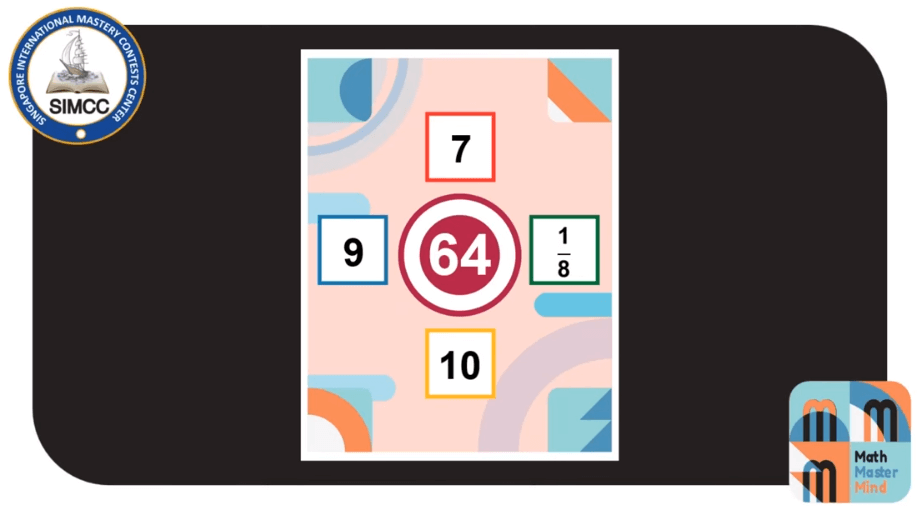

Pega o total de pontos divide por 4 e multiplica por 5.
Máximo de: 69 pontos.
Pontuação para o time de 3 jogadores:
0-9 pontos do Maths Warriors.
Math Master Mind (MMM):
0-10 pontos da Rodada de times.
0-30 pontos da Rodada individual.
Pega o total de pontos divide por 3 e multiplica por 5.
Máximo de: 69 pontos.
Regras:
Você tem 1 número central e 4 números ao redor.
O objetivo é formar o número central utilizando pelo menos 2 dos números ao redor realizando expressões matemáticas.
Você pode e deve utilizar as 4 operações aritméticas básicas: adição: + , subtração: - , multiplicação: x e divisão: / , assim como: (parenteses) e [colchetes].
Cada número ao redor não pode ser usado mais de uma vez.
Gameplay:
1. Aqui temos os primeiros números:
2. E aqui temos uma possível solução, para formar o número central 15 utilizando a expressão: 9 + 10 - 1 - 3.
3. Agora com outros números temos:
4. Então existem várias soluções como opções de respostas como podemos ver na imagem abaixo:
5. Então existem várias soluções como opções de respostas como podemos ver na imagem abaixo:
6. Novos números:
7. Solução:
8. Novos números:
9. Solução:
10. Novos números:
11. Novos números:
12. Solução:
13. Novos números:
14. Solução:
15. Novos números:
16. Solução:
17. Neste exemplo podemos ver que entre os novos números ao redor tem uma fração, as categorias inferiores não precisam se preocupar:
18. Solução:
19. Novos números:
20. Solução:
21. Novos números:

22. Solução:
23. Folha de resposta, coloca a expressão em cima e pinta as bolinhas referentes ao resultado: